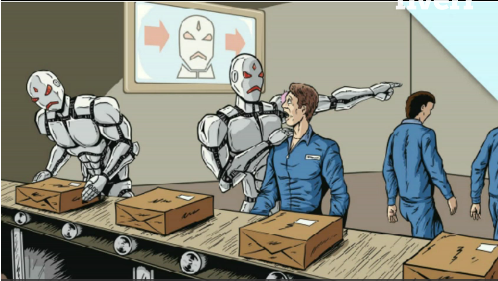

I'm going to outline how I think technology, economics and society will affect each other in the future.
Chances are you'll disagree with some of my predicitions and analyses. But the point of this page is not to convince you (though, hey, if you share my outlook, that's great!). What I'm really hoping to explain is why I want to turn my life to coding and developing technologies.
Are you sitting comfortably?
Then I'll begin....
The structure of society, in terms of the state, the economy, employment and democracy, is changing fundamentally.
Changes in society, economy and technology are not just pushing change in the way we live, work and interact, they are also, particularly technology, enabling change. Founders and Coders is a great example of the kind of innovation in society which has been enabled, rather than merely pushed, by change.
To say the information revolution is comparable to the industrial revolution is not an overstatement. And further, in terms of technological literacy and adoption, we are approaching a tipping point, so that the period we are now in, is crucial in deciding the direction these changes will move in for decades to come.
|
Much of this future social, cultural terrain is already being mapped out by giants. To take one example- any open AI will have an uphill task in the future to compete with Google. Or, to take another- the dominant model of low- and semi-skilled employment since the boom of the 1960s will find it difficult, even supported by the state, to hold its ground against the Uber-ised gig economy. But there are other areas of our lives where the future remains terra incognito. Facebook, for example, will one day go the way of MySpace, to be replaced by something even smarter. But by what? I hope it will be something more decentralised, modular and more responsive to its users' needs rather than the needs of monetisable innovations from the centre. But whether it is will depend on who chooses to build it. But perhaps a better example is in the realm of democracy. There, there has been no profit motive to drive new technology and so the field is wide open, to be designed as we choose! Almost anyone who has been involved in collective decision making, whether in a hierarchy such as most workplaces, whether in a democracy as small as a ten-person housing co-op or whether engaging with one as large as their national government, will have found it a slow and often frustrating process. In fact, the more truly and transparently power in an organisation is decentralised, the more unproductive labour it requires to engage in its processes. And that turns people off. |
 |
Almost anyone who has been involved in collective decision making, whether in a hierarchy such as most workplaces, whether in a democracy as small as a ten-person housing co-op or whether engaging with one as large as their national government, will have found it a slow and often frustrating process. In fact, the more truly and transparently power in an organisation is decentralised, the more unproductive labour it requires to engage in its processes. And that turns people off.
Democracy is dying a slow death. Liberal-democratic states are experiencing a crisis of legitimation, which will become something very unpleasant unless there's some technological game-changer. Trump used his data analytic game-changer to go from being a joke to being a president and this will very soon be a trend. I would hope that the trend can be neutralised- through technology enabling direct democracy, at a fine-granular level, to counter different kinds of state capture (of which Trump is just one obvious example).
On the smaller scale, technology can reduce by orders of magnitude the time individuals need to spend on the democracy of small groups. Currently, if you are a busy person, then the time overhead required to be meaningfully involved in the democratic processes of a group normally means that you won't be able to take part in them. That's something technology can change.
|
An example that intrigues me is peer-to-peer. P2P is ripe to be a revolution in the way we interact with technology in the next ten years. In developed countries, the cost of keeping a given device connected to the internet has fallen to almost zero and most people carry around a machine capable of secure encryption and multithreading in their pockets. But the tech economy hasn't adapted to it yet. Ten years from now, cryptocurrencies, smart city technology, and meshing IoT devices will have taken society unawares, just as email did. Compared to its full potential, P2P is still in its infancy. And someone will raise the infant. Will that be Google, will it be a handful of start-up geniuses building the unicorns of the 2020s, or will it be a bunch of open-sourcers motivated by shaping the future for the next generation? It's not only designing and building the technologies of the future that will give today's coders (and indeed founders) the chance to make their mark on the world. But only people literate in systems, and particularly: coding; flows of data; 'code as law', will have a meaningful influence on the changes of the 21st century. In the coming era, there will be new monopolies formed but, on the other hand, also a considerable overgrowing of the world's existing established repositories of power by new social, economic and technological forms of human organisation. The shape, and the ethics, of these new forms will be determined by those in the current generation who are capable of intimately understanding the systems which will go about changing all of our world- that is, those of us who think as coders. And these new forms, and their ethics, will echo through culture and social organisation for many decades to come. |
This was made in the past |
Most of you reading this page will find something in it that you disagree with, or think is no more than wild speculative assertion. And wouldn't it be a boring world if we all thought the same? But I hope you can see why I think that coding is more than just a niche or skill equivalent to law or politics, why I think coders today are important for the whole of society tomorrow, why I hope new forms like Founders and Coders, engaging a diverse bunch of people, are just the tip of the iceberg and why, in the end, this is what I hope to be able to do with my life…
Morkeltry